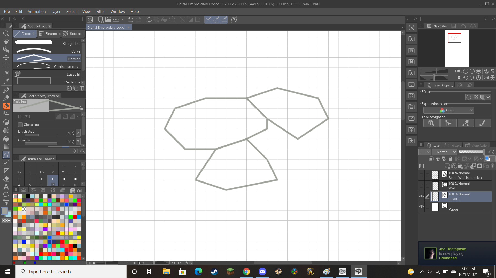

When coming up with my design, I knew right away that I wanted it to be in some way inspired by history. I'm a history major, and easily my favorite part of history is the stuff you can find and interact with out in the world. The most prominent example in New England, and one which I have a particular fondness for, are the various stone walls that can be found snaking through forests and fields, denoting where old fields once were. I came up with a few other designs based on walls, and other historical things of interest, but I knew from the start that I was almost certainly going with the stone wall idea.

I had a pretty solid idea of my design from the get-go: a segement of stone wall in the middle, with the fictional company name sitting along the top of it. Making my design once again took place in Clip Studio Paint instead of Adobe Illustrator, due to lack of access to it. I wanted a design that was sharp and angular, so to acomplish this I used the grid and line tool to snap together a short segment of wall.
With the core of the design in place, I moved onto the other compontents. for the framing elements, I was initially usure what to do, not wanting to use a simple line or something. However, I had the idea to use trees to frame the logo, acomplishing a dual purpose of serving as framing elements, and creating the image of a stone wall in a forest, with trees in the forground. I chose to make this design asymetric, as I thought it made the logo pop more, and it fit with the asymetric wall. Keeping the palette simple, I made the wall grey, and the trees brown, nice muted colors that contrast well. Continuing with the theme of old stone walls and colonial New England, I wanted to use a font evocative of that period. I specifcally envisioned either a handwritten font similar to what you might see written in a letter of the time, or a printing press font with a weathered effect to denote its age. Initially, I selected the font Aqualine Two, as it perfectly fit the handwritten style. However, Premier+ could not accurately replicate this curvy, thin font, so I switched to IM FELL ENGLISH Pro, a weathered print font like you'd see in a colonial newspaper. All this came together to creat a design I am very happy with! It evokes the spirit of the New England countryside, much of its past reclaimed by nature, while also maintaining a clean, modern look that translates well to emroidery.


With the design finished, next up was putting it into Premier+ to configure it for the digital embroidery machine. To do so, you load your design, exported as a PNG or JPG, into Premier+, which will then take you through a series of steps to scale, select colors, and pick what regions of your design will be included. Once that is done. Once everything is squared away, you click the cloud icon on the top bar and click 'Send to my SewNet from the dropdown menu.


Now it's time to embroider! Attaching the embroidery piece to the maching and placing your material inside the hoop, as well as making sure the thread is all set, all you need to do is select your design in the display, and the machine will automatically stitch the logo onto the material! This process completed perfectly for me, and I was able to quickly move onto the sewing, which was far more challenging. The machine functions essentially like a standard sewing machine, so after removing the embroidery parts, all that is necessary to do is use the raise/lower foot buttons, the reverse thread button, and the foot pedal as necessary. It took a long time and a fair amount of struggling with the machine malfunctioning, but I got my bag done in the end!
This project was quite a struggle to get done, but I'm happy with how it turned out, and glad I was able to finish it.
Design file.{kind=link}